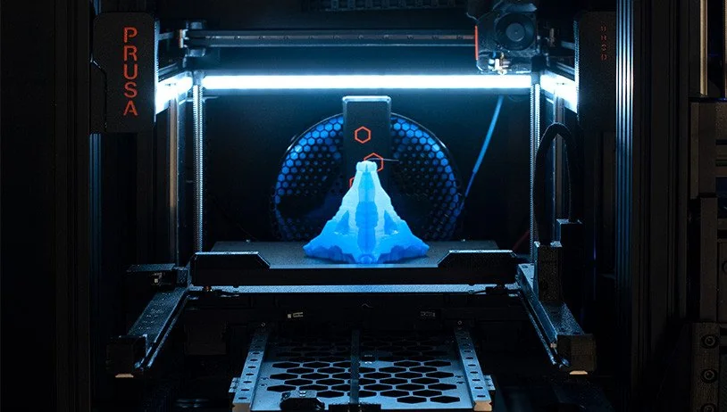
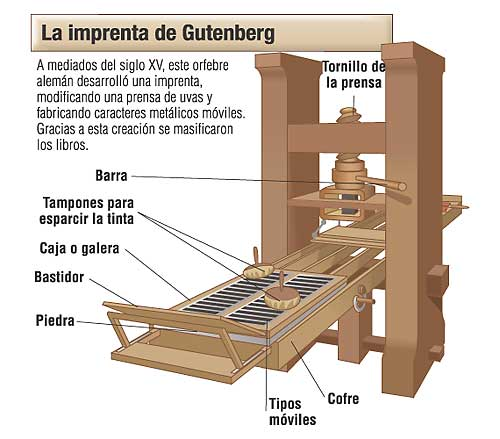

Impresoras

Orígenes de la impresión mecanizada :nut_and_bolt:
La reproducción de textos e imágenes ha sido una necesidad constante en la historia de la humanidad. Antes de la aparición de las impresoras electrónicas modernas, la referencia más destacada en la evolución técnica de la impresión fue la invención de la imprenta de tipos móviles por Johannes Gutenberg en el siglo XV. Este logro supuso una verdadera revolución cultural al permitir la producción masiva de libros y documentos a un costo mucho más reducido que los manuscritos realizados a mano. Aunque la imprenta de Gutenberg no era electrónica, su impacto sentó las bases para la evolución posterior de la impresión, pasando por sistemas mecánicos, eléctricos y finalmente electrónicos, que culminan en las impresoras que hoy conocemos.

Imprenta de Gutenberg
 Tipos móviles
Tipos móviles
Timeline de la impresión
Tarea
Crear un documento para cada tipo de impresora entre las asignadas más abajo.
- Debe estar contenido en una carpeta propia de nombre el nombre de la impresora con el numero delanta.
- Crear documento de mardown
.md.
- Cada documento debe contener:
- Referencia de internet a pagina de interes sobre esta impresora.
- Referencia a impresora comercial, p.e. enlace de amazon a una impresora de este tipo o pagina de fabricante.
- Imagen representativa de la impresora nombrar la imagen con el numero y el nombre de la impresora.
- Diagrama tecnico de la impresora.
- Descripción de la impresora.
- Fecha de invención (si es posible) sino fecha de aparición en el mercado sino fecha aproximada.
- Ventajas y desventajas.
adsd
ver ejemplo para impresoras de etiquetas industriales.
Numeros por persona
- Abellah (5 números): 2, 9, 21, 23, 37
- Ingrid (4 números): 6, ✅10, 14, 35, 39
- Mauricio (4 números): ✅3, ✅7, ✅15, ✅32
- Mohamed (4 números): 1, 8, 16, 30
- Moncef (4 números): ✅4, ✅12, ✅17, ✅29
- Bilal (4 números): 5, 13, 27, 36
- Oier (4 números): ✅11, ✅20, ✅22, ✅34
- Josue (4 números): ✅18, ✅25, ✅31, ✅38
- Annia (4 números): 19, 24, 26, 33
- Mikel: Timeline
Tipos de impresoras :fax:
A continuación se presenta una clasificación amplia de distintos tipos de impresoras, organizadas por diferentes criterios:
Por Tecnología de Impresión
- Impresora matricial (dot matrix)
- Impresora de margarita (daisy wheel)
- Impresora de línea
- Impresora de inyección de tinta con cabezales térmicos
- Impresora de inyección de tinta con cabezales piezoeléctricos
- Impresora láser monocromo
- Impresora láser a color
- Impresora LED
- Impresora térmica directa
- Impresora de transferencia térmica
- Impresora de sublimación de tinta
- Impresora de tinta sólida (solid ink)
- Impresora fotográfica dedicada (basada en inkjet o sublimación)
- Impresora 3D FDM (Modelado por Deposición Fundida)
- Impresora 3D SLA (Estereolitografía)
- Impresora 3D SLS (Sinterizado Selectivo por Láser)
- Impresora 3D DLP (Procesamiento Digital de Luz)
- Impresora 3D PolyJet
- Impresora 3D Binder Jetting
- Impresora 3D metálica (DMLS, EBM)
Por Uso o Sector
- Impresora doméstica (generalmente inkjet)
- Impresora de oficina o empresarial (láser, multifunción)
- Impresora fotográfica profesional (alta calidad, inkjet o sublimación)
- Impresora industrial/comercial de gran formato (plotter)
- Impresora offset digital (industrial)
- Impresora de flexografía digital (industrial)
- Impresora de rotograbado digital (industrial)
- Impresora de etiquetas y códigos de barras (industrial/comercial)
- Impresora POS (punto de venta, generalmente térmica)
- Impresora para tarjetas plásticas (PVC)
- Impresora portátil o móvil (impresoras de bolsillo)
Por Funcionalidad Adicional
- Impresora multifunción (MFP: impresora, escáner, copiadora y ocasional fax)
- Impresora con conectividad avanzada (Wi-Fi, Bluetooth, impresión en la nube)
- Impresora con funciones de seguridad y gestión avanzada (cifrado, autenticación)
- Impresora para formatos estándar (A4, A3, A2, etc.)
- Impresora fotográfica mini (formato reducido, ej. 10x15 cm)
- Plotter (para planos, diseños CAD y gran formato)
- Impresora de etiquetas y códigos de barras (térmicas, uso comercial)
- Impresora de tickets/recibos (POS, pequeñas y rápidas)
Este listado, aunque puede presentar algunas superposiciones entre categorías, ofrece una visión amplia y enumerada de distintos tipos de impresoras existentes en el mercado y en la industria actual. En total se han enumerado 39 tipos.
Cada tipo de impresora tiene sus ventajas y desventajas, y la elección de una u otra dependerá de las necesidades específicas de cada usuario o entorno de impresión.